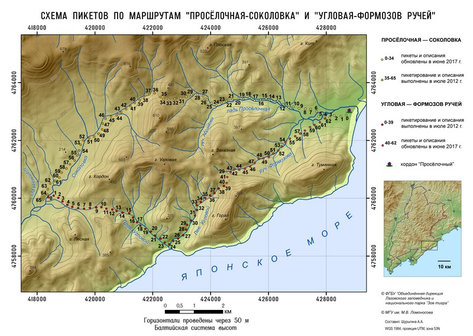

ЗИМНИЙ МАРШРУТНЫЙ УЧЁТ — ежегодная работа в каждом заповеднике России. Она проводится с целью определения видового состава и численности животных, прежде всего, копытных и хищных, а также птиц. Это помогает оценить состояние их популяций. Результаты маршрутных исследований заносятся в основной научный документ заповедника — Летопись природы.
Для закрепления маршрутов на местности используются пикеты — обозначенные цветом деревья через равные расстояния. В летнее время ЗМУ используются не только для изучения животного мира, но и растительных сообществ. Цифрами на графике обозначены номера пикетов; в плавающем окне — краткая информация о его положении; нажмите на точку пикета и Вы узнаете, какие растения там можно встретить.

